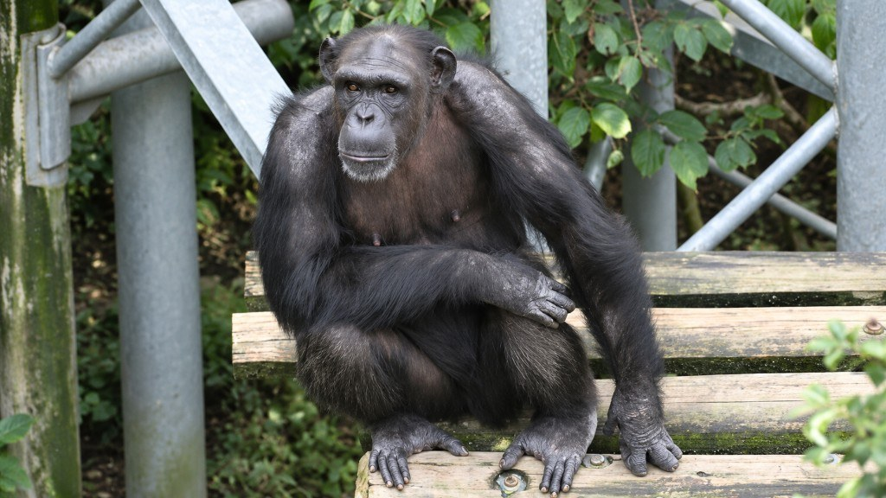

京都市動物園で子どもが飼育エリアに侵入 チンパンジーを緊急射殺
京都 — 京都市動物園で、幼い子どもがチンパンジーの飼育エリア内に入り込む事故があり、子どもの安全を確保するため、園の緊急対応チームがチンパンジー1頭を射殺した。事故が発生したのは土曜日の午後。4歳の男の子が家族とはぐれ、屋外の飼育エリア内に入り込んだ。ほとんどの個体は職員の誘導に応じたが、オス「バントゥ（Bantu）」が屋外に残り子どもに近づいた。飼育員が誘導できず、緊急対応チームは子どもの生命の危険を判断し…


![ポッドキャスト [English World] エピソード 154: 2027 年に開始される日本初の無人タクシー サービス<br />](https://english-kyodo.ismcdn.jp/mwimgs/7/2/255m/img_72d82279ca4f11ba0a0d775d23436efb394209.jpg)
![ポッドキャスト [English World] エピソード 153: 長崎博物館が韓国人原爆犠牲者の知られざる物語に光を当てる<br />](https://english-kyodo.ismcdn.jp/mwimgs/f/4/255m/img_f40316b37434ab61965b6c369f1e3367329020.jpg)
![ポッドキャスト [English World] 第 152 話: 家事の資格<br />](https://english-kyodo.ismcdn.jp/mwimgs/c/b/255m/img_cbb485371138408cd2e3ce746c163d16358297.jpg)
![ポッドキャスト [English World] エピソード 151: 日本は外国人の永住権規則を厳格化](https://english-kyodo.ismcdn.jp/mwimgs/b/9/255m/img_b99efc07da905e500083cf015ea54dc4470175.png)